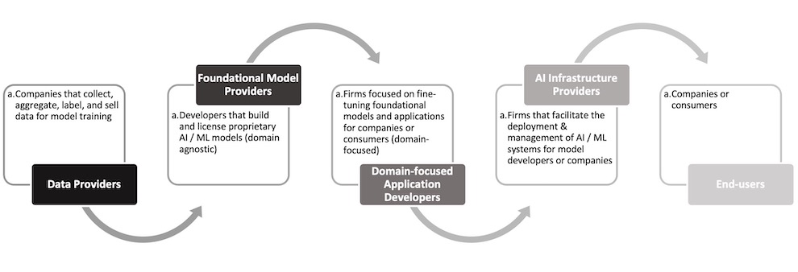
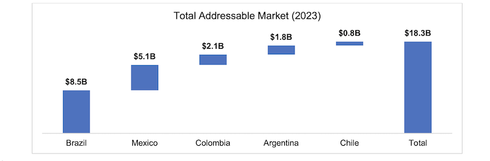

AI Supply Chain
deployment of AI systems after reading this article from a former college professor. The growing interest in AI from companies and consumers has been catalyzed by GenAI models from a select number of companies: OpenAI, Anthropic, Google, Meta. But the rapid growth of AI adoption has mainly been centered around the suppliers of foundational models (e.g. GPT-4) and startups building applications powered by foundational models (e.g. chatbots, virtual assistants). This overlooks the various stakeholders within the supply chain that help train, fine-tune, integrate, deploy, and manage AI systems for the best end-user experience for businesses and consumers. The current state is reminiscent of the early days of IT outsourcing.
Given the existing growth of LLMs and adjacent foundational models is a result of companies and universities building on decades of AI R&D, there is an opportunity in for startups that enable and manage the efficient deployment of AI systems for companies and consumers globally. Below is a quick categorization of different areas in the supply chain from upstream to downstream stages of AI development and deployment (this is my first attempt at organizing different literature, so it is subject to change). The interactions between stakeholders across the supply chain cannot be easily mapped because they are not as linear as traditional goods supply chains. This ecosystem graph from Stanford’s Center for Research on Foundational Models aims to show the connections between various providers in the AI supply chain.

There is a unique space for investors to support AI startups that orchestrate different levels in the supply chain to unlock value in developed and underdeveloped regions by tailoring products and services to regional business practices and consumer preferences. Facilitating the deployment and management of AI systems for organizations with limited technical resources, such as SMBs, has the potential to improve their financial and operational outcomes to help them reach new levels of success.
The objective of this summary is to help categorize AI startups, as there is value yet to be unlocked across different levels of the supply chain. A follow-up to this is a market map similar to one created by the Madry Lab at MIT for startups and a better understanding of the physical infrastructure that enables AI deployment—infrastructure necessary for energy-efficient, performance-maximizing deployments. For example, CPUs / GPUs, semiconductors, data centers, cloud services, fiber / 5G networks, and advanced energy technologies among others. But the current context signals there is high value in future physical infrastructure because the demand for systems currently exceeds the current supply today’s infrastructure can support.
Example Investment Memo B2B Services
Summary
We recommend an $8.6M investment in the XXX-led Series A financing round for Farmu, a leading B2B marketplace for independent pharmacies in Colombia, at a $43M pre-money valuation. This investment gives XXX 20% fully diluted ownership and a board seat.
Our belief in Farmu’s success is defended by Francisco’s vision to solve supply chain inefficiencies for independent pharmacies, his ability to build an experienced team, Farmu’s efforts to optimize unit economics, market trends, and the size of the market. Farmu currently serves more than 3,000 pharmacies across 6 major cities in Colombia. Their catalog offers over 2,700 unique products to their customers from more than 100 manufacturers. Farmu’s value proposition for pharmacies are low prices, high product selection, on-site delivery, and inventory management. The value propositions for manufacturers are insights into pharmacy purchasing behavior and marketing opportunities. By creating mutually beneficial relationships with pharmacies and manufacturers, Farmu positions itself as a valuable partner to both sides of the marketplace, giving them the opportunity to diversify products and services within the vertical.
Farmu’s leadership possesses years of business development, marketplace, and supply chain management experience that will help them execute their vision to modernize the supply chain for independent pharmacies in Latin America. In addition to the team’s academic and professional aptitude, Francisco’s grit in the early days of Farmu conducting on-the-ground research, personally operating fulfillment, and using local messengers for delivery demonstrates his commitment to the problem and resilience to problem-solve for customers. Additionally, Fabián Gómez Gutiérrez, sits on Farmu’s board, offering valuable guidance for scaling and optimizing supply chain solutions in Colombia, Mexico, and Brazil.
About Farmu
Farmu was founded by Francisco Jassir in 2021 in Colombia. To access Farmu’s catalog, pharmacy owners need to provide a business license (Cámara de Comercio), business tax ID number (RUT), and the pharmacy’s address. Customers can access the platform and place orders anytime via a smartphone, tablet, or desktop. In addition to their marketplace, Farmu provides credit opportunities to their active customers; to become eligible for credit, customers must be on Farmu for 2 months and have placed at least 5 orders with a minimum value of ~$25 USD.
They offer low prices to the pharmacies by securing wholesale contracts directly from manufacturers. They offer high product selection by constantly adding new manufacturers’ products to their catalog. They offer on-site delivery by operating their own distribution centers and providing last-mile delivery to their customers. Lastly, they provide inventory management solutions by learning from their customers’ purchasing behavior to predict which products they may need to stock or restock, ensuring pharmacies’ end customers have the best selection of products available. Unlike traditional distributors, Farmu’s technology platform enables them to offer manufactures insights on their customers and market trends.
Team
Francisco J. Jassir founded Farmu in 2021. He discovered the inefficiencies within independent pharmacies after he could not find critical treatment medications for his father who was sick with COVID-19. Before founding Farmu, he was a supply chain specialist at Frubana, a B2B marketplace for restaurants. He was a business analyst at McKinsey Colombia before attending business school at Columbia Business School. Daniel Echeverri Froidefond is Chief Operations Officer. He was previously at Uber for 6 years, where he was an operations leader across Bolivia, Ecuador, Peru, and India. After receiving his bachelor’s in business administration from ICESI, he held roles at Banco de Occidente, Citi, and Linio Colombia (an e-commerce platform). Additionally, he was the founder of lamerienda, an online ingredients and recipe delivery platform, and Peppy, a cold press juice business. Martín González Sierra is Head of Growth and was previously Head of Revenue. Before Farmu, Martín held various corporate banking roles at Bancolombia. He earned his bachelor’s in business administration at CESA. Ignacio Correa de Losada is Vice President of Product and was previously Head of Growth. Prior to joining Farmu, he was a consultant at McKinsey Peru for 3 years. He earned his bachelor’s in politics, philosophy, and economics at the University of Oxford.
Market Opportunity
The existing supply chain model includes 4 major stakeholders: manufacturers, distributors, retail pharmacies, and end customers. Incumbent distributors are available through multiple channels: online marketplaces, WhatsApp, and physical warehouses. The model has generally remained unchanged in Latin America. Existing inefficiencies in the supply chain result in expensive transactions and losses for independent pharmacies. As independent pharmacies experience intensifying competition, improving their operations to save time and money can make the difference between thriving and shutting down.
There are multiple market conditions that present tailwinds for Farmu:
| Tailwinds |
Commentary |
| Increase in household spend on health-related products |
After COVID-19, health has become top-of-mind for people to avoid getting sick or minimize the symptoms of illnesses. Health and fitness also remain a strong trend in LatAm, as shown by the rise of Mexican, Colombian, and Brazilian fitness influencers and regional growth of SmartFit, a Brazilian gym franchise. This generates demand for health-related products sold at independent pharmacies. |
| Intensifying pharmacy competition |
The rise of delivery platforms, such as Rappi, UberEats, and Justo, have facilitated the success of franchises with deep pockets who can pay for promotions and campaigns on delivery platforms. Large competitors also own tools and data that efficiently manage inventory. This creates an opportunity for Farmu to help independent, local pharmacies compete with larger competitors by leveraging their competitive advantages to thrive. |
| Decentralized distribution channels |
There are various distribution channels available to pharmacies: manufacturers, wholesale distributors, and even other pharmacies. Pharmacies typically must have multiple vendors due to ineffective inventory planning, limited product availability from distributors, unreliable delivery times, and varying product quality among vendors. This facilitates the adoption of Farmu's marketplace where they can get inexpensive, high-quality products with reliable deliveries; they also benefit from Farmu's data analytics to better plan their purchases and manage inventory. |
Farmu’s total addressable market is approximately $18.3B. It represents the total spend of independent pharmacies on inventory vendors across 5 major Latin American markets. There are ~185K independent pharmacies across the 5 geographies; the TAM assumes that pharmacies, on average, spend ~$8K.

$18.3B is a mildly attractive market but is only representative of Farmu’s existing business: inventory spend of small, independent pharmacies. After proving product-market fit of its marketplace, Farmu can significantly expand its TAM through value-add software and financial services for pharmacies and manufacturers and by diversifying its customer base to include pharmacy chains, wellness retailers, and grocery stores. Francisco has verbalized the team’s intention to diversify their business. Farmu’s credit product is a positive signal that they are moving towards this direction—although their focus is maximizing the marketplace’s value proposition to independent pharmacies.
Unit Economics

Farmu’s existing model is capital intensive, given their ownership of inventory, warehouses, and fulfillment. This makes it critical to understand the operational efficiency through their unit economics. Given Farmu is now a 2-year-old business, there is enough data to perform informative analysis on their gross margins, customer lifetime value (12-month period) and customer acquisition costs. Although pharmacies are the current focus, it is also important to understand the demand side of the marketplace (manufacturers), as they are key to developing Farmu’s catalog and improving unit economics of the overall marketplace.
Components of Farmu’s unit economics show that the primary constraint to achieving attractive unit economics lies within gross margins, given the capital intensity of fulfillment, which includes warehousing and delivery costs. If I had access to data from Farmu, I would have liked to illustrate the unit economics of the business by graphing cohort graphs of (gm*LTV)-CAC. This view will help us understand the dynamics of LTV with respect to CAC: sensitivity to CAC and approximate payback periods across cohorts. Additionally, a complementary view is to understand gm*LTV and CAC across time periods; this view will help demonstrate the efficiency of sales and marketing investments over time. This definition of unit economics was adopted from Tribe Capital’s Unit Economics and The Pursuit of Scale Invariance. Tribe’s approach aims to calibrate for scale by incorporating gross margins; this ensures a constant view of payback periods as the business scales.
There are various ways Farmu optimizes unit economics: wholesale contracts, customer purchase analysis, and delivery route optimization. Wholesale contracts help Farmu minimize the costs of inventory. Additionally, Farmu performs quantitative analyses to understand their customers’ purchasing decisions and predict future purchases; this helps optimize warehouse inventory, improve product suggestions to customers, and forecast demand to inform future wholesale contracts. Lastly, Farmu leverages two major products from DispatchTrack, a supply chain technology company that offers data tools to improve business fulfillment management: PlannerPro and LastMile. PlannerPro is a route-optimization tool and LastMile gives customers real-time order tracking. Adopting these strategies to optimize their operations demonstrates Farmu’s commitment to improving the marketplace, which directly leads to better customer experience, relationships with manufacturers and unit economics. It is important to note that Farmu’s capital intensive business is contained within the existing marketplace business.
Product-Market Fit
Metrics across GMV, pharmacy customers, and fulfillment help validate that Farmu’s marketplace is efficiently connecting the supply with the demand over time and improving the value proposition for both manufacturers and pharmacies. Below is a quick checklist of topline Farmu metrics I would track in a formal due diligence to quantify product-market fit:

Risks
| Risk |
Commentary |
| Regulation |
Selling medication requires government approval for both vendors and pharmacies; additionally, health regulatory laws periodically change, so it is important that Farmu and their customers are updated to avoid fines and legal fees |
| Network Effects |
It is probably for Farmu’s marketplace to fail establishing network effects needed to attract new customers, directly harming their business growth and strength in the market |
| Competition |
There are B2C start-up competitors (Prixz, Farmaonline, Farmatodo, Farmagora), B2B start-up competitors (Farmalisto, TudoFarma, FarmaSuper), and incumbent distributors that can threaten Farmu’s growth if they adopt similar strategies to serve independent pharmacies |
| Business Model |
Facilitating all the operations of a marketplace will be expensive in the early stages as Farmu achieves economies of scale and expands to new markets; imperative for the team to monitor capital efficiency and diversify revenue streams |
| Capital |
Farmu’s expensive business model requires that they have enough cash to maintain existing operations and support expansion to new markets |
Outcome Analysis
This outcome analysis gives Farmu an 80% survival rate. While high, it is informed by limited direct competition, continued success in its existing footprint, and the team’s efforts to diversify revenue streams and core products / services. With more data, it is possible to conduct a more robust analysis of Farmu’s exit value based on peer benchmarks globally, market size, and revenue targets.

Conclusion
Farmu is addressing a historically overlooked market that is filled with inefficiencies that are threatening the success of independent pharmacies. In many Latin American communities, independent pharmacies are the primary health center. We believe Farmu can unlock the true value of this supply chain to help manufacturers and independent pharmacies better serve their customers and communities. With our investment, marketplace experience, and talent network, we can help Farmu replicate their success in Colombia in Brazil, Mexico, Chile, and Argentina and cement their place in the market. We are excited to recommend a $8.6M investment in Farmu.